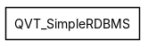
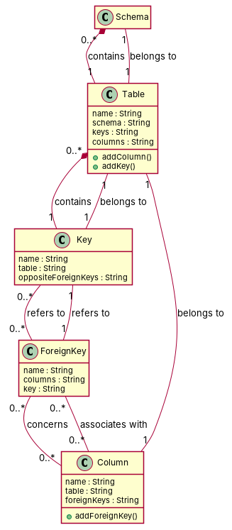

R1: RModelElement is a class that belongs to SimpleRDBMS package. It has an attribute named "kind" of type "String" R2: Schema class belongs to SimpleRDBMS package R3: Table is a class in the SimpleRDBMS package R4: Column is a class in SimpleRDBMS package. It has an attribute named "type" of type "String" R5: Key is a class in SimpleRDBMS package R6: ForeignKey is a class in SimpleRDBMS package R7: A Schema is composed of 0 or several Tables in an RDBMS R8: A Table is associated to one and only one Schema in an RDBMS R9: A Table is composed of 0 or several keys in an RDBMS R10: A Column is owned by one and only one Table in an RDBMS R11: A Column is associated to 0 or several foreign keys R12: A Key is owned by one and only one Table in an RDBMS R13: A Key refers to 0 or several opposite foreign keys in an RDBMS R14: A Foreign Key concerns 0 or several Columns in an RDBMS R15: A Foreign Key refers to one and only one Key in an RDBMS
Red, struck-through: removed by ambiguity removal; green: added.
| actors (0 → 0) |
|---|
| classes (7 → 7) |
|---|
| Column |
| ForeignKey |
| Key |
| Rdbms |
| RmodelElement |
| Schema |
| Table |
| attributes (2 → 2) |
|---|
| Column.type |
| RmodelElement.kind |
| relations (1 → 1) |
|---|
| association: Table -> Schema |
| id | req | type | cue | status | readings / explanation |
|---|---|---|---|---|---|
| A1 | R7 | quantifier | 0 or several | resolved | 0..*; 1..* The requirement does not specify if a Schema can have at least one Table or none. |
| A2 | R9 | quantifier | 0 or several | resolved | 0..*; 1..* The requirement does not specify if a Table can have at least one key or none. |
| A3 | R11 | quantifier | 0 or several | resolved | 0..*; 1..* The requirement does not specify if a Column can have at least one foreign key or none. |
| A4 | R13 | quantifier | 0 or several | resolved | 0..*; 1..* The requirement does not specify if a Key can refer to at least one opposite foreign key or none. |
| A5 | R14 | coordination | noun or noun | resolved | A Foreign Key concerns 0 or several Columns in an RDBMS; A Column is associated to 0 or several foreign keys in an RDBMS The requirement is ambiguous between a ForeignKey and a Column being the subject of the association. |
| A6 | R14 | quantifier | 0 or several | rejected | 0..*; 1..* This is a duplicate of A5 and does not add new information. |


"""Code skeleton generated from the shared model of D2/QVT_SimpleRDBMS.
Every class and method records the requirement(s) it traces to."""
from __future__ import annotations
import dataclasses as _dc
import enum as _enum
import typing as _t
@_dc.dataclass
class Schema:
"""Source: R2"""
table: _t.Optional["Table"] = None
@_dc.dataclass
class Table:
"""Source: R3, R7, R8, R9"""
name: _t.Optional[str] = None
schema: _t.Optional[str] = None
keys: _t.Optional[str] = None
columns: _t.Optional[str] = None
key: _t.Optional["Key"] = None
def addColumn(self) -> None:
"""Operation."""
raise NotImplementedError
def addKey(self) -> None:
"""Operation."""
raise NotImplementedError
@_dc.dataclass
class Column:
"""Source: R4, R10, R11"""
name: _t.Optional[str] = None
table: _t.Optional[str] = None
foreignKeys: _t.Optional[str] = None
def addForeignKey(self) -> None:
"""Operation."""
raise NotImplementedError
@_dc.dataclass
class Key:
"""Source: R5, R12, R13"""
name: _t.Optional[str] = None
table: _t.Optional[str] = None
oppositeForeignKeys: _t.Optional[str] = None
foreignKeys: _t.List["ForeignKey"] = _dc.field(default_factory=list)
@_dc.dataclass
class ForeignKey:
"""Source: R6, R14, R15"""
name: _t.Optional[str] = None
columns: _t.Optional[str] = None
key: _t.Optional[str] = None
| python_compiles | True |
|---|---|
| java_compiles | True |
| attribute_mismatches | 0 |
| method_mismatches | 0 |
| use_cases | 0 |
| use_cases_without_actor | 0 |
| use_cases_without_method | 0 |
| actors_without_use_case | 0 |
| relations_to_unknown_class | 0 |
| inconsistencies | 0 |
| inconsistency_rate | 0.0 |
| requirement_coverage | 0.9333 |
| validator fixes | |
| assumptions for open ambiguities | [] |
| element | P | R | F1 | TP/FP/FN |
|---|---|---|---|---|
| classes | 1.0 | 0.833 | 0.909 | 5/0/1 |
| attributes | 0.0 | 0.0 | 0.0 | 0/13/3 |
| relations | 1.0 | 0.417 | 0.588 | 5/0/7 |
| relations_strict | 1.0 | 0.417 | 0.588 | 5/0/7 |